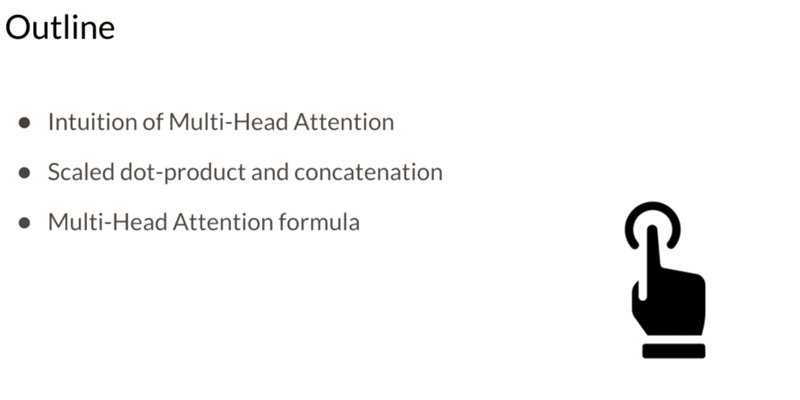
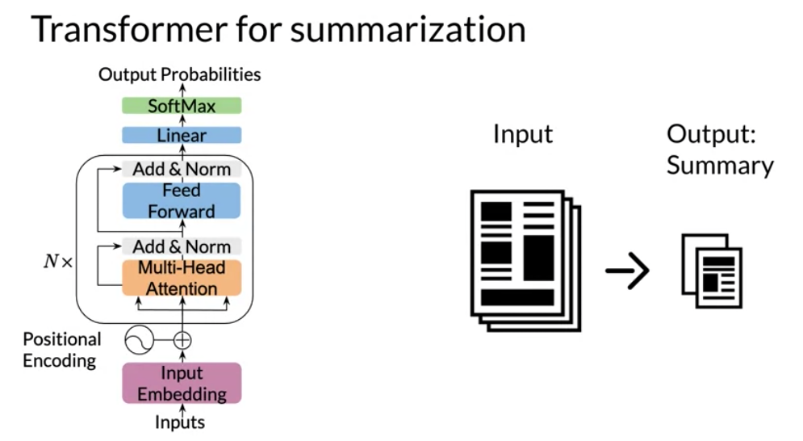

def DotProductAttention(query,key,value,mask,scale=True):
"""Dot product self-attention.
Args:
scale (bool): if to scale
Returns:
numpy.ndarray: attention array (L_q by L_k)
"""
# Save query embedding dimension
depth = query.shape[-1] if scale else 1
# Calculate scaled query key dot product
dots = np.matmul(query, np.swapaxes(key, -1, -2)) / np.sqrt(depth)
# Apply the mask
if mask is not None:
dots = np.where(mask, dots, np.full_like(dots, -1e9))
logsumexp = scipy.special.logsumexp(dots, axis=-1, keepdims=True)
dots = np.exp(dots - logsumexp)
attention = np.matmul(dots, value)
return attention
- I immersed myself in this material so I could real understand it.
- I treated the assignments like small work or research project thinking how they could be made better and more rigorous.
- I been interested in summarization task for many years.
Learning objectives
TLDR: neural network engineering
For the impatient - We’ll start with NLP engineering insights from this week.
What is attention ?
The latest version of {{ site.product_name }} is now available. - Attention is a general solution for the sequence alignment problem. - Attention doesn’t reorder the input sequence. - It provides a linear transformation which filters the relevant parts of the source for predicting the each item in the target.
attention(h_t,\bar{h}_s)= softmax(h_t^T\bar{h}_s)
What is dot-product attention ?
- Dot Product attention is the most common form of attention.
- In the engineering sense it is suited for a encoder-decoder architecture
- It is the best fit for tasks where the source sequence is fully available at the start and the tasks is mapping or transformation the source sequence to an output sequence like
- It is used for alignment and machine translation or translation.
attention_{(\cdot)}(Q,V,K) = softmax(\frac{QK^T}{\sqrt{n}})V
What is causal attention ?
- Causal attention is also called self attention.
- It is used to generate a sequence based on previous tokens.
- It requires a mask M to enforce ignoring ‘future’ values during training.
attention_{self}(Q,V,K) = softmax(\frac{QK^T}{\sqrt{n}}+M)V
where:
- n is the embedding dimension.
def SelfAttention(query,key,value,scale=True):
"""Self attention.
Args:
scale (bool): if to scale
Returns:
numpy.ndarray: Self-attention array (L_q by L_k)
"""
# Save query embedding dimension
depth = query.shape[-1] if scale else 1
# Calculate scaled query key dot product
dots = np.matmul(query, np.swapaxes(key, -1, -2)) / np.sqrt(depth)
logsumexp = scipy.special.logsumexp(dots, axis=-1, keepdims=True)
dots = np.exp(dots - logsumexp)
attention = np.matmul(dots, value)
return attentionWhat is multi-headed attention?
Multi-headed attention replicates the attention mechanism analogously to the multiple filters used in convolutional layers.
attention_{mh}(Q,V,K) = softmax(\frac{QK^T}{\sqrt{n}})V
The different attention heads are given different subspaces of the embeddings to work with. This causes them to specialize on different areas. More so if the embedding is also structured to store different data in subspaces say by concatenating different embeddings for morphology, semantics etc in those sub spaces.
After input is processed by the heads their output is concatenated and processed by a big feed forward layer which uses most of the parameters in the model.
What is positional encoding
Unlike the RNN which process information sequentially transforms need to provide the model with extra information to explicitly describe the order if the input sequences.
You might think this is added as an index but positional embedding is added as a low dimensional wave which can be added to an high dimensional embedding. (or concatenated) this is achieved using a special purpose layer.
import trax
import trax.layers as tl
# Embedding inputs and positional encoder
positional_encoder = [
# Add embedding layer of dimension (vocab_size, d_model)
tl.Embedding(vocab_size, d_model),
# Use dropout with rate and mode specified
tl.Dropout(rate=dropout,mode=mode),
# Add positional encoding layer with maximum input length and mode specified
tl.PositionalEncoding(max_len=max_len)
]What is teacher forcing ?
An interesting technique that is frequently used in dynamical supervised learning tasks is to replace the actual output y(t) of a unit by the teacher signal d(t) in subsequent computation of the behavior of the network, whenever such a value exists. We call this technique teacher forcing. — A Learning Algorithm for Continually Running Fully Recurrent Neural Networks, 1989.
Additional coding notes:
Here are some notable code snippets.
How to reshape a test tensor so it has a (size 0) batch dimension at the front?
This is needed when inspecting single test inputs instead of working with a batch. The model is expecting to process batches of inputs like it saw during training - we therefore need to add a dimension at the start.
padded_with_batch = fastnp.expand_dims(fastnp.array(padded),axis=0)
# get log probabilities from the last token output
log_probs = output[0,-1,:] How to make TRAX take in string date as a stream ?
inputs = next(trax.data.tokenize(iter([input_str]),
vocab_dir='vocab_dir/',
vocab_file='summarize32k.subword.subwords'))How to transpose batched tensors ?
# batch_size, seqlen, n_heads, d_head -> batch_size, n_heads, seqlen, d_head
x = jnp.transpose(x, (0, 2, 1, 3))How to de-structure tensors for use with multihead attention ?
# batch_size, seqlen, n_heads*d_head -> batch_size, seqlen, n_heads, d_head
x = jnp.reshape(x,(batch_size, seqlen, n_heads, d_head))
# batch_size, seqlen, n_heads, d_head -> batch_size, n_heads, seqlen, d_head
x = jnp.transpose(x, (0, 2, 1, 3))
# batch_size, n_heads, seqlen, d_head -> batch_size*n_heads, seqlen, d_head
x = jnp.reshape(x,( batch_size*n_heads, seqlen, d_head))input tensor shape: (3, 2, 6) [[[1 0 0 1 0 0] [0 1 0 0 1 0]] [[1 0 0 1 0 0] [0 1 0 0 1 0]] [[1 0 0 1 0 0] [0 1 0 0 1 0]]] output tensor shape: (6, 2, 3) [[[1 0 0] [0 1 0]] [[1 0 0] [0 1 0]] [[1 0 0] [0 1 0]] [[1 0 0] [0 1 0]] [[1 0 0] [0 1 0]] [[1 0 0] [0 1 0]]]
Video 1: Transformers vs RNNs
RNNs were a big breakthrough and became the state of the art (SOTA) for machine translation (MT).
This illustrates a typical RNN that is used to translate the English sentence “How are you?” to its German equivalent, “Wie sind Sie?”.

{kind=link}
The LSTM which goes a long way to solving the vanishing gradient problems requires three times the memory and cpu steps a the vanilla RNN.
However, as time went by and models got longer and deeper the biggest challenge with improving RNNs, became their use of sequential computation.
{kind=link}
Which entailed that to process the word “you”, the RNN it has to first go through “are” and then “you”. Two other issues with RNNs are the:
Information loss
It becomes harder to keep track of whether the subject is singular or plural as you move further away from the subject.

transformer architecture:
in the encoder side - lookup layer - the source sequence is converted from one hot encoding to a distributed representation using an embedding. - this is converted to K V matrices in the decoder side
Vanishing Gradient
When gradients you back-propagate, the gradients can become really small and as a result.
With small gradient the model will learn very little.
{kind=link}
Transformers which are based on attention and don’t require any sequential computation per layer, only a single step is needed.
{kind=link}
Additionally, the gradient steps that need to be taken from the last output to the first input in a transformer is just one. For RNNs, the number of steps increases with longer sequences. Finally, transformers don’t suffer from vanishing gradients problems that are related to the length of the sequences.
Video 2: Transformer Applications
Transformers have essentially replaced RNN,LSTM and GRUs in sequence processing.

{kind=link}
Applications:
- Text summarization
- Autocomplete
- NER
- Q&A
- Translation
- Chat Bots
- Sentiment Analyses
- Market Intelligence
- Text Classification
- OCR
- Spell Checking
{kind=link}
SOTA Transformers
Transformers Time Line:
- GPT-4:
- ElmO
- BERT
- T5
T5 - Text-To-Text Transfer Transformer
{kind=link}
{kind=link}
(Raffel et al. 2019) introduced T5 which can do a number of tasks with a single model. While the earlier transformer models were able to score high in many different tasks without specific training. T5 is setup to handle different inputs and respond with output that is relevant to the requested task.
T5 Classification tasks
These tasks are selected using the initial string: - Translate English into German - Cola sentence - Question
{kind=link}
T5 regression tasks
- Stbs Sentence1 … Stbs Sentence2 …
- Summarize:

Warning
I found this one a little confusing
We are told that the transformers can do in one operation what RNN needed to do in many steps. Also when querying transformers it does one task at a time. It seem that this question is about the ability of multiple heads to do several tasks at once could not do this is not well understood.
{kind=link}
Video 3: Dot-Product Attention
{kind=link}
Dot product attention was introduced in 2015 by Minh-Thang Luong, Hieu Pham, Christopher D. Manning in Effective Approaches to Attention-based Neural Machine Translation which is available at papers with code.
Look at Review of Effective Approaches to Attention-based NMT
Dot product attention is the main operation in transformers. It is the dot product between the embedding of source and target sequences. The embedding used is a cross language embedding in which distance between equivalent across languages are minimized. This facilitates finding the cosine similarity using the dot product between words.

Let’s try to understand dot product attention intuitively by walking over its operations at the word level. The actual algorithm uses linear algebra to perform many operations at once which is fast but more abstract and therefore difficult to understand.
- Using a pre-trained cross-language embedding encode:
- each German word vector q_i is placed as a column vector to form the query matrix Q,
- each English word once as k_i and once as v_i, column vectors in the key K and value V matrices. This is more of a preprocessing step.
- For each German word we want to derive a continuous filter function on the English sequence to pick the most relevant words for translation. We build this filter for word q_i by taking its dot product q_i \cdot k_i with every word vector from the english sequence these products are called the the attention weights.
- next we convert the rudimentary filter to a probabilistic one by applying a softmax() which is just a differentiable function that converts the attention weights to probabilities by keeping them at the same relative sizes while ensuring they add to one.
- now that we have a q-filter we want to apply it. This is done by taking the weighed sum of the english words using the attention weights.
\hat q_i = \sum_{i} softmax(q_i \cdot k_i) \times v_i = \sum w_a(q_i) * v_i
Query, Key & Value
{kind=link}
Attention uses three matrices which are formed as shown in the figure The Query Q, Key K and Value V are formed from the source and target (if there is no target then just from the source). Each word is converted into an embedding column vector and these are placed into the matracies as their columns. In the master class embedded bellow Dr. Łukasz Kaiser talks about attention and here he is talking about solving the problem of retrieving information from a long sequence. At around 16 minutes in he call Q a query vector and K and V a memory, of all the words we have seen, which we want to access.
- The Query is the matrix formed from the column word vector for the German words.
- The Key is the matrix formed from the column word vector for the English words.
- The Value is the matrix formed from the column word vector for the English words.
Note
K and V are the same
Once these are called keys since we use them to are we doing a similarity lookup. And the second time they are called value because we use them in the activation when we apply the weights to them. The input and output sequences are mapped to an embedding layer to become the Q, K and V matrices.
Given an input, you transform it into a new representation or a column vector. Depending on the task you are working on, you will end up getting queries, keys, and values. Each column corresponds to a word in the figure above. Hence, when you compute the following:
{kind=link}
- multiply Q by V.
- apply the softmax() to transform to a probability.
- multiply the softmax by V

This is restating the above in a very confusing way. I looked at it many times before I figured out that the square brackets are the dimensions and that we have the following two formulas indicated schematically above:
Z = W_A V
where:
- Z has size of is a ‘Q length’ \times ‘Embedding size’ matrix
- or for coders [len(Q),D] dimensional array
W_A = softmax(QK^T)
This concept implies that similar vectors are likely to have a higher score when you dot them with one another. You transform that score into a probability by using a softmax function. You can then multiply the output by
You can think of the keys and the values as being the same. Note that both K,V are of dimension L_k, D. Each query q_i picks the most similar key k_j.
{kind=link}
Queries are the German words and the keys are the English words. Once you have the attention weights, you can just multiply it by V to get a weighted combination of the input.
{kind=link}
{kind=link}
another interesting point made in the preceding talk is that dot product attention has O(n^2 *d) complexity but typically d >> n since d ~ 1000 while for n ~ 70. So transformers should perform better then an RNN whose complexity is O(n*d^2). And this is before the advantages of using an efficient transformer like reformer.
In (Kasai et al. 2021) there is a reversal of the trend from rnn to transformers. Here the latest results show a an idea of training big transformers and then converting them to RNN to improve performance. (One get an RNN by training a transformer.)
V4: Causal Attention
- We are interested in three main types of attention.
- We’ll see a brief overview of causal attention.
- We’ll discover some mathematical foundations behind the causal attention.

In terms of use cases there are three types of attention mechanisms:
Scaled dot product attention:
- AKA Encoder-Decoder attention.
- one sentence in the decoder look at to another one in the encoder.
- use cases:
- seq2seq
- machine translation.
Causal Attention:
- AKA self attention.
- attention is all you need.
- In the same sentence words attend to previous words.
- Future words have not been generated yet.
- use cases:
- generation
- text generation
- summarization.
Bi-directional self attention:
- In one sentence words look both at previous and future words.
- use cases:
- machine comprehension.
- question answering
{kind=link}
In causal attention, queries and keys come from the same sentence. That is why it is often referred to as self-attention. In general, causal attention allows words to attend to other words that are related in various ways.

At a high-level We have K Q V matrices. corresponding However, token should not attend to words in the future since these were not generated yet. Therefore the future token’s data is masked by adding a big negative number.

Mathematically, it looks like this:

{kind=link}
V5: Multi-head Attention
Let’s summarize the intuition behind multi-head attention and scaled dot product attention.

{kind=link}
Q. What are multiple attention heads?
- Multiple attention heads are simply replicas of the attention mechanism. In this they are analogous to the multiple filters used in a convolutional neural networks (CNN).
- During training they specialize by learning different relationships between words.
- During inference the operate parallel and independently of each other.
{kind=link}
This is perhaps the most important slide - but it fails to show the critical part of the algorithm.
Let’s suppose we have k attention heads. We see at the lowest level the K, Q and V being passed into passing through k linear layers. How is this accomplished and more important why. What is actually happening here is the opposite of concatenation. Instead of processing a query embedding from a space of d-dimensions we first split the embedding into k vectors of length D/k. We have now k vectors from a k D/k-dimensional subspace. We now perform a dot product attention on each of these subspaces.
Each of these dot product attention is operating on a difference subspace. It sees different subsets of the data and therefore specializes. How do these heads specializes is anybody’s guess - unless we have a special embedding which has been processed using PCA or some other algorithm to ensure that each subspace corresponds to some interpretable subset of features.

For example if we used a 1024 dimension embedding which concatenates 4 representations.
- [0:256] is an embedding trained on a phonological task
- [256:512] is an embedding trained on a morphological task
- [513:768] is an embedding trained on a syntactical task
- [769:1024] is an embedding trained on a semantic task
We could devise a number of subspace sampling schemes to give the k different attention heads different areas of specializations.
- sample from a single sub-space
- 4 heads sample from one subspace and 4 heads sample from 3 different sub-spaces
- 5 heads sampling from 2 subspaces different sub-spaces and 3 from 1
- 5 heads sampling from 2 subspaces different sub-spaces and 3 from three
Each would specialize on a domain or on a interface between two domain or on all data but one domain. Language is rather redundant so they may be able to reconstruct most of the missing data - but at least they would specialize in a linguistically meaningful way.
Given a word, you take its embedding then you multiply it by the Q, K, V matrix to get the corresponding queries, keys and values. When you use multi-head attention, a head can learn different relationships between words from another head.
Here’s one way to look at it:
- First, imagine that you have an embedding for a word. You multiply that embedding with Q to get q_1, K to get k_1, and V to get v_1
{kind=link}

{kind=link}
{kind=link}


{kind=link}

- Next, you feed it to the linear layer, once you go through the linear layer for each word, you need to calculate a score. After that, you end up having an embedding for each word. But you still need to get the score for how much of each word you are going to use. For example, this will tell you how similar two words are q_1 and k_1or even q_1 and k_2 by doing a simple q_1 \dot k_1. You can take the softmax of those scores (the paper mentions that you have to divide by \sqrt(d) to get a probability and then you multiply that by the value. That gives you the new representation of the word.) If you have many heads, you can concatenate them and then multiply again by a matrix that is of dimension (dim of each head by num heads - dim of each head) to get one final vector corresponding to each word.
Here is step by step guide, first you get the Q, K, V matrices: Note that the computation above was done for one head. If you have several heads, concretely nn, then you will have Z_1, Z_2, \ldots, Z_n. In which case, you can just concatenate them and multiply by a W_O matrix as follows:
Hence, the more heads you have, the more Zs you will end up concatenating and as a result, that will change the inner dimension of W_O, which will then project the combined embeddings into one final embedding.

V6: Transformer Decoder
{kind=link}
There is a learning objective here!
the transformer decoder has two parts
- a decoder block (with multi-head attention) - think feature acquisition.
- a feed forward block - think non-parametric regression on the features.

{kind=link}


V7: Transformer Summarizer

In this video we move on from attention and transformer blocks to the actual nlp task of text summarization. I noticed that the assignment put most of the focus on the coding of attention and the transformer block. Once it worked I started to really wonder what was going on under the hood and realized that while the notebooks it said we were building this from scratch, the reality was that trax framework was hiding lots of the implementation details from us
we are told there is an input and an output but the two are combined into one long sequence.

So to account for concatenating the output to the output we have a mask.

However we might want to give the input some weights so that we can incorporate it into the language model. also I don’t think I saw anywhere how we feed this loss weighs into the loss function. Loss weights were created as a masks by the following code:
mask = [0] * (len(list(article)) + 2) + [1] * (len(list(summary)) + 1)
# the +2 Accounting for EOS and SEP
# and +1 Accounting for the final EOS {kind=link}
Cross entropy loss
Cross-entropy loss, or log loss, measures the performance of a classification model whose output is a probability value between 0 and 1. Cross-entropy loss increases as the predicted probability diverges from the actual label.
{kind=link}
After training GPT2 on summarization data we just treat it like a word model and mine it for summaries. We do this by supply it with an input and predicting the output token by token. A more sophisticated method might be to use a beam search.
An even more sophisticated method might be to use an information metric to reject sentences and back track or better yet to do negative sampling from the prediction distribution (i.e. erase some prediction’s probabilities and renormalize)
One could do even better by providing hints, especially if we also head some kind of extractive model with a high-level of certainty about the most important sentence and their most significant concepts.

We want the model to be penalized if it makes the wrong prediction. In this case it it does not predict the next word in the summary.
This may not be ideal for a number of reasons:
- the Big world view “we are interested in a summary not the next word” what if the model is generating a semantically equivalent summary, in such a case it should not be penalized at all.
In a previous assignment we used a siamese network to check if two queries were equivalent. I think that allowing the network would be beneficial. (A loss that examines a generated sequence and compares it to the output.) But I don’t really know how to back-propagate the outcome for all the words. Well not exactly
As we are using teacher forcing we can take a position that we ignore all the mistakes the model made and give it a good output sequence and ask it for the next word. This then allows us to back prop the last word’s loss all by itself.
If we do this for each word in the output in sequence we should be able to reuse most of the calculations.
There are cases we have multiple summaries:
- For a wikipedia article we often have all version from inception to the current day. This can provide multiple summaries and text along with an a golden version (the current summary). Oh and we may have a better summary in other languages but that is a different story.
- For IMDB movie plots we often have a long synopsis and multiple shorter summaries. Also we may also have the book or screen play.
I mention these two cases since Curriculum Learning may be able to assist us in training
{kind=link}
I think these is much missing from this lesson about summerization. However there are a number of good source in papers as well as some lectures on YouTube.
I have quickly summarized one and should link to it from here once it is published.
Lab1 : Attention
This was a numpy based realization of dot product and multi-head attention. Some of the main assignment required porting this to Jax.
Lab2 : The Transformer Decoder
this covered the transformer block
Assignment: Transformer Summarizer
This long assignment primarily focused on dot product attention, multi-head attention and on building the transformer blocks. These were manageable as their theory had been explained in the lectures and their code had already been covered in the labs. It glosses over the parts involving data processing, training, evaluation and the actual summarization task. The summarization is accomplished using maximum likelihood estimate. A beam search might have yielded better results.
The date as described by:
We use the CNN/Daily Mail dataset (Hermann et al., 2015; Nallapati et al., 2016), which contains online news articles (781 tokens on average) paired with multi-sentence summaries (3.75 sentences or 56 tokens on average).
Get To The Point §4 (Abigail et all 2017) We used the non anatomized version. However the earlier paper used a preprocessed version which replaced the named entities with token like
$entity5. This is probably ideal in other situations like event processing where each event looks quite different unless one anatomizes them rendering them much more similar and hopefully helping the model generalize better by learning from the partitions induced by the equivalency relation.
Expanding the lab to a project:
This is one of the main areas I’d like to focus on for a project. I have in mind a tool for improving wikipedia article leads. Here is how I’d like to take this project to the next level:
more data
train it on additional material:
- papers and abstracts.
- wikipedia articles (with good first paragraphs. )
- books and book summaries (could be problematic due to the book’s length)
- movie scripts and outlines from IMDB
- a Storyline
- summary (paragraph)
- a synopsis (longer)
More algorithms
- Using a reformer to handle longer texts like books.
- Better summarization using:
- a beam search to build better summaries.
- a bayesian search to avoid repetitions.
- use curriculum learning to speed up training with
- easier examples first.
- multiple summaries per text.
- learning on anonymized NE before graduating to non-anonymized texts
- use better method for evaluation of summary.
- Perhaps an
f-scorecombining precision or recall on - Attention Activation summed as a Coverage score for each token.
- Perhaps an
- use of non zero loss-weights layer
- drop to zero as training progresses.
- depend on the actual length of source and output.
- use tf-idf to make holes in the mask surrounding essential concepts.
Evaluation
use sammy lib with
- rouge-n metric
- the pyramid metric
Extra features
- visualize the concepts/sentences/paragraphs/sections covered in the summary.
- establish a hierarchy of what would go into a longer outline.
- develop a f-score metric combining precision and recall for the summary of the abstract.
- in academic writing one sentence per paragraphs should capture the main concept and it is generally the first second or the last. Is such a sentence is available identify it. This would be done by comparing each sentence with the rest of the paragraph.
Open question
For me the assignment raised a number of questions about what really going on here during training.
I’ll probably do this assignment again and look for some answers to my many questions. Once I have these I’ll add them in the body of these notes.
Questions
- Loading and prepocessing the data:
- What is going on after we load the dataset - is there data augmentation?
- What this sub word vocab?
- How to make my own sub word vocab?
- How are out of vocab words being handled?
- Can we query the model about these beside running decode ?
- How are these created - I saw several sizes of vocab.
- Training
- Training data seems to be a little mangled - there seems to be missing white space after the first token of the summaries, is there some way to fix this?
- In not sure but why do we use teacher forcing during training?
- It should speed training up, but the setup is unclear.
- Evaluation
- Why are we not looking at a summarization metic like pyramid, rouge5 or good old precision and recall.
- Inference
- How can we tell the model thinks its done?
- when it output and
token
- How to generate one sentence for each paragraph/section
- Chop up the input and summarise each section.
- Create an new dataset that bases it summaries on the last and first sentences of each paragraph. If that’s too long summarize again for each section.
- Introduce a timed mask that hides [0:t*len/T] where T is total number of tokens being generated.
- make the mask a Bayesian search mechanism that hides concepts in the output.
- How to use multiple summaries like in IMDB?
- score using the pyramid scheme or rogue.
- How to make the model avoid repeating /rephrasing themselves?
- use a metric on new information. for example Maximal marginal relevance. MMR = \argmax [\lambda Sim_1(s_i,Q)- (1 - \lambda) \max Sim_2(s_i,s_j)] where Q is the query and s are output sentences and try to bake this into the regularization.
- a coverage vector seems to be a recommend method.
- Visualization
- Is there a easy way to see the activation for each word in the output?
- Is there a easy way to see which concepts are significant (not too common and not too rare)
- Is there a easy way to see which concepts are salient - aligned to near by concepts.
References
Papers
Transformers
- Exploring the Limits of Transfer Learning with a Unified Text-to-Text Transformer (Raffel et al, 2019)
- Reformer: The Efficient Transformer (Kitaev et al, 2020)
- Attention Is All You Need (Vaswani et al, 2017)
- Deep contextualized word representations (Peters et al, 2018)
- BERT: Pre-training of Deep Bidirectional Transformers for Language Understanding (Devlin et al, 2018)
- Finetuning Pretrained Transformers into RNNs (Kasai et all 2021)
Summarization
- A trainable document summarizer. (Kupiec et al., 1995) extractive
- Constructing literature abstracts by computer: techniques and prospects. (Paice, 1990) extractive
- Automatic text summarization: Past, present and future (Saggion and Poibeau, 2013) extractive
- Abstractive sentence summarization with attentive recurrent neural networks. (Chopra et al., 2016) abstractive summarization
- Pointing the unknown words. (Nallapati et al., 2016) abstractive summarization
- A neural attention model for abstractive sentence summarization. (Rush et al.,2015;) abstractive summarization
- Efficient summarization with read-again and copy mechanism(Zeng et al., 2016) abstractive summarization
- Get To The Point: Summarization with Pointer-Generator Networks (Abigail et all 2017) Hybrid summarization. Note: Christopher D. Manning
- Extractive Summarization as Text Matching (Zhong et all 2020)
Articles
- The Illustrated Transformer (Alammar, 2018)
- The Illustrated GPT-2 (Alammar, 2019)
- How GPT3 Works - Visualizations and Animations (Alammar, 2020)
- Attention? Attention! (Lilian Weng, 2018)
- The Transformer Family (Lilian Weng, 2020)
- Teacher forcing for RNNs
Links
- Jax
- Trax
- Trax community on Gitter
- CNN daily mail dataset
References
Kasai, Jungo, Hao Peng, Yizhe Zhang, Dani Yogatama, Gabriel Ilharco, Nikolaos Pappas, Yi Mao, Weizhu Chen, and Noah A. Smith. 2021. “Finetuning Pretrained Transformers into RNNs.” CoRR abs/2103.13076. https://arxiv.org/abs/2103.13076.
Raffel, Colin, Noam Shazeer, Adam Roberts, Katherine Lee, Sharan Narang, Michael Matena, Yanqi Zhou, Wei Li, and Peter J. Liu. 2019. “Exploring the Limits of Transfer Learning with a Unified Text-to-Text Transformer.” CoRR abs/1910.10683. http://arxiv.org/abs/1910.10683.
Reuse
CC SA BY-NC-ND
Citation
BibTeX citation:
@online{bochman2021,
author = {Bochman, Oren},
title = {Week 2 {Text} {Summarization}},
date = {2021-03-31},
url = {https://orenbochman.github.io/notes/deeplearning.ai-nlp-c4/2021-03-31-c4w2-text-summerization.html},
langid = {en}
}
For attribution, please cite this work as:
Bochman, Oren. 2021. “Week 2 Text Summarization.” March 31,
2021. https://orenbochman.github.io/notes/deeplearning.ai-nlp-c4/2021-03-31-c4w2-text-summerization.html.